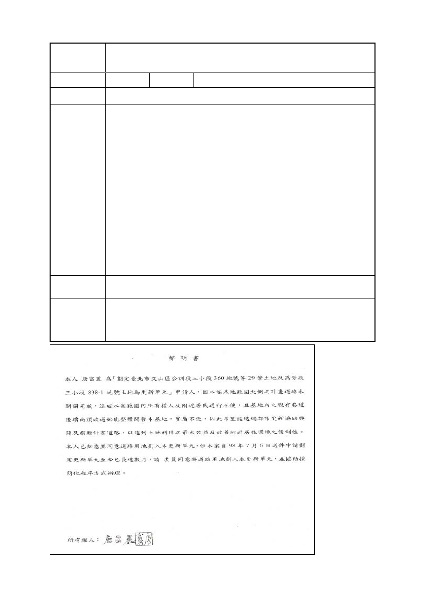

臺北市都市計畫委員會 公民或團體陳情意見綜理表
案名
編號
陳情地點
劃定臺北市文山區公訓段三小段 360 地號等 29 筆土地及萬芳
段三小段 838-1 地號土地為更新單元
1 陳情人 高昌益
申請劃定更新單元案件範圍以北之未開闢計畫道路。
陳情理由
建議辦法
本人據悉唐富麗小姐刻正申請辦理「劃定臺北市文山區公訓
段三小段 360 地號等 29 筆土地及萬芳段三小段 838-1 地號土
地為更新單元」，因申請範圍北側計畫道路尚未完成徵收開
闢，考量本地區整體發展，以提升週邊環境品質，陳情將該
申請劃定都市更新單元範圍北側之計畫道路一併劃入更新單
元範圍內，以配合都市更新程序完成計畫道路興闢作業。除
可協助政府加速解決道路徵收與興闢問題，申請人亦可依
99.02.25.修正之都市更新建築容積獎勵辦法申請建築容積獎
勵，另對原申請案之現有巷道改道方案亦可直接辦理廢巷，
實屬三贏方案，本人已徵得申請者唐小姐同意，惠請同意在
不影響該案申請劃定時程原則下，同意將北側未開闢計畫道
路納入劃定範圍。
擴大更新單元劃定範圍，將北側未開闢計畫道路一併納入。
委員會
決議
本案更新單元劃定範圍考量地區交通需求，同意陳情人及申
請人代表之建議，將北側未開闢計畫道路一併納入更新單元
範圍，計畫書、圖內容請一併配合修正。
- 24 -